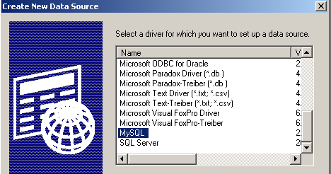

7. Database access
7.1. General
There are many databases available for Windows platforms. To access them, applications use programs called drivers.
 |
In the diagram above, the driver has two interfaces:
- the I1 interface presented to the application
- the I2 interface to the database
To prevent an application written for database B1 from having to be rewritten if migrating to a different database B2, standardization efforts have been made on interface I1. If databases using "standardized" drivers are employed, database B1 will be provided with driver P1, database B2 with driver P2, and the I1 interface of these two drivers will be identical. Thus, the application will not need to be rewritten. For example, you can migrate an ACCESS database to a MySQL database without changing the application.
There are two types of standardized drivers:
- ODBC (Open DataBase Connectivity) drivers
- OLE DB (Object Linking and Embedding DataBase) drivers
ODBC drivers provide access to databases. The data sources for OLE DB drivers are more varied: databases, email systems, directories, etc. There are no limits. Any data source can be the subject of an OLE DB driver if a vendor decides to do so. The benefit is obviously significant: you have uniform access to a wide variety of data.
The .NET platform comes with two types of data access classes:
- SQL Server.NET classes
- OLE DB.NET classes
The first classes allow direct access to Microsoft’s SQL Server DBMS without an intermediate driver. The second classes allow access to OLE DB data sources.

The .NET platform is provided (as of May 2002) with three OLE DB drivers for SQL Server, Oracle, and Microsoft Jet (Access), respectively. If you want to work with a database that has an ODBC driver but no OLE DB driver, you cannot. Thus, you cannot work with the MySQL DBMS, which (as of May 2002) does not provide an OLE DB driver. However, there is a set of classes that allow access to ODBC data sources: the odbc.net classes. These are not included by default with the SDK and must be downloaded from the Microsoft website. In the examples that follow, we will primarily use these ODBC classes because most databases on Windows come with such a driver. Here, for example, is a list of ODBC drivers installed on a Windows 2000 machine (Start Menu/Settings/Control Panel/Administrative Tools):

Select the ODBC Data Source icon:

7.2. The two ways to use a data source
The .NET platform allows you to use a data source in two different ways:
- connected mode
- disconnected mode
In connected mode, the application
- opens a connection to the data source
- works with the data source in read/write mode
- closes the connection
In offline mode, the application
- opens a connection to the data source
- retrieves a memory copy of all or part of the data from the source
- closes the connection
- works with the in-memory copy of the data in read/write mode
- when the work is finished, opens a connection, sends the modified data to the data source so it can be updated, and closes the connection
In both cases, it is the process of processing and updating the data that takes time. Imagine that these updates are performed by a user entering data; this process can take tens of minutes. During this entire time, in connected mode, the connection to the database is maintained and changes are reflected immediately. In offline mode, there is no connection to the database while the data is being updated. Changes are made only to the in-memory copy. They are reflected in the data source all at once when everything is finished.
What are the advantages and disadvantages of the two methods?
- A connection consumes system resources. If there are many simultaneous connections, offline mode helps minimize their duration. This is the case for web applications with thousands of users.
- The disadvantage of offline mode is the delicate handling of concurrent updates. User U1 retrieves data at time T1 and begins modifying it. At time T2, user U2 also accesses the data source and retrieves the same data. In the meantime, user U1 has modified some data but has not yet transmitted it to the data source. U2 is therefore working with data, some of which is incorrect. .NET classes offer solutions to manage this problem, but it is not easy to resolve.
- In connected mode, simultaneous data updates by multiple users do not normally pose a problem. Since the connection to the database is maintained, the database itself manages these simultaneous updates. Thus, Oracle locks a row in the database as soon as a user modifies it. It will remain locked—and therefore inaccessible to other users—until the user who modified it commits the change or rolls it back.
- If data needs to be shared over the network, you should choose offline mode. This mode provides a snapshot of the data in an object called a dataset, which functions as a standalone database. This object can be shared over the network between machines.
We will first examine connected mode.
7.3. Accessing data in connected mode
7.3.1. The databases in the example
We are considering an Access database named articles.mdb that contains only one table named ARTICLES with the following structure:
name | type |
code | 4-character item code |
name | its name (string) |
price | its price (actual) |
current_stock | current stock (integer) |
min_stock | the minimum stock (integer) below which the item must be restocked |
Its initial contents are as follows:

We will use this database via both an ODBC driver and an OLE DB driver to demonstrate the similarity between the two approaches and because we have both types of drivers available for ACCESS.
We will also use a MySQL database named DBARTICLES, which has the same single ARTICLES table, the same content, and is accessed via an ODBC driver, to demonstrate that the application written to use the Access database does not need to be modified to use the MySQL database. The DBARTICLES database is accessible to a user named admarticles with the password mdparticles. The following screenshot shows the contents of the MySQL database:
C:\mysql\bin>mysql --database=dbarticles --user=admarticles --password=mdparticles
Welcome to the MySQL monitor. Commands end with ; or \g.
Your MySQL connection id is 3 to server version: 3.23.49-max-debug
Type 'help' for help.
mysql> show tables;
+----------------------+
| Tables_in_dbarticles |
+----------------------+
| articles |
+----------------------+
1 row in set (0.01 sec)
mysql> select * from articles;
+------+--------------------------------+------+--------------+---------------+
| code | name | price | current_stock | minimum_stock |
+------+--------------------------------+------+--------------+---------------+
| a300 | bike | 2500 | 10 | 5 |
| b300 | pump | 56 | 62 | 45 |
| c300 | bow | 3500 | 10 | 20 |
| d300 | arrows - set of 6 | 780 | 12 | 20 |
| e300 | diving suit | 2800 | 34 | 7 |
| f300 | oxygen tanks | 800 | 10 | 5 |
+------+--------------------------------+------+--------------+---------------+
6 rows in set (0.02 sec)
mysql> describe articles;
+---------------+-------------+------+-----+---------+-------+
| Field | Type | Null | Key | Default | Extra |
+---------------+-------------+------+-----+---------+-------+
| code | text | YES | | NULL | |
| name | text | YES | | NULL | |
| price | double | YES | | NULL | |
| current_stock | smallint(6) | YES | | NULL | |
| minimum_stock | smallint(6) | YES | | NULL | |
+---------------+-------------+------+-----+---------+-------+
5 rows in set (0.00 sec)
mysql> exit
Bye
To define the ACCESS database as an ODBC data source, proceed as follows:
- Open the ODBC Data Source Administrator as shown above and select the User DSN tab (DSN = Data Source Name)

- Add a source using the Add button, specify that this source is accessible via an Access driver, and click Finish:

- Name the data source "articles-access," enter a description of your choice, and use the Select button to specify the database's .mdb file. Finish by clicking OK.

The new data source will then appear in the list of user DSNs:

To define the MySQL DBARTICLES database as an ODBC data source, proceed as follows:
- Open the ODBC Data Source Administrator as shown above and select the User DSN tab. Add a new data source using Add and select the MySQL ODBC driver.

- Click Finish. A MySQL source configuration page will then appear:
54321

- In (1), give a name to your ODBC data source
- In (2), specify the machine where the MySQL server is located. Here, we enter `localhost` to indicate that it is on the same machine as our application. If the MySQL server were on a remote machine `M`, we would enter its name here, and our application would then work with a remote database without any changes.
- In (3), enter the database name. Here, it is called DBARTICLES.
- In (4), enter the username admarticles, and in (5), the password mdparticles.
7.3.2. Using an ODBC driver
In an application using a database in connected mode, the following steps are generally involved:
- Connecting to the database
- Sending SQL queries to the database
- Receiving and processing the results of these queries
- Closing the connection
Steps 2 and 3 are performed repeatedly, with the connection closing only at the end of database operations. This is a relatively standard pattern that you may be familiar with if you have worked with a database interactively. These steps are the same whether the database is accessed via an ODBC driver or an OLE DB driver. Below is an example using the .NET classes for managing ODBC data sources. The program is called liste and takes as a parameter the DSN name of an ODBC data source containing a table named ARTICLES. It then displays the contents of this table:
dos>list
syntax: pg dsnArticles
dos>list articles-access
----------------------------------------
code,name,price,current_stock,minimum_stock
----------------------------------------
a300 bike 2500 10 5
b300 pump 56 62 45
c300 bow 3500 10 20
d300 arrows - pack of 6 780 12 20
e300 diving suit 2800 34 7
f300 oxygen tanks 800 10 5
dos>mysql-articles list
Database operation error (ERROR [IM002] [Microsoft][ODBC Driver Manager] Data source name not found and no default driver specified)
dos>mysql-articles list
----------------------------------------
code,name,price,current_stock,minimum_stock
----------------------------------------
a300 bike 2500 10 5
b300 pump 56 62 45
c300 bow 3500 10 20
d300 arrows - pack of 6 780 12 20
e300 diving suit 2800 34 7
f300 oxygen tanks 800 10 5
From the results above, we can see that the program listed the contents of both the ACCESS database and the MySQL database. Let’s now examine the code for this program:
' options
Option Explicit On
Option Strict On
' namespaces
Imports System
Imports System.Data
Imports Microsoft.Data.Odbc
Imports Microsoft.VisualBasic
Module db1
Sub main(ByVal args As String())
' console application
' displays the contents of an ARTICLES table in a DSN database
' whose name is passed as a parameter
Const syntax As String = "syntax: pg dsnArticles"
Const tabArticles As String = "articles" ' the articles table
' parameter validation
' Is there 1 parameter?
If args.Length <> 1 Then
' error message
Console.Error.WriteLine(syntax)
' end
Environment.Exit(1)
End If
' retrieve the parameter
Dim dsnArticles As String = args(0) ' the DSN
' preparing the connection to the database
Dim articlesConn As OdbcConnection = Nothing ' the connection
Dim myReader As OdbcDataReader = Nothing ' the data reader
' Attempt to access the database
Try
' database connection string
Dim connectString As String = "DSN=" + dsnArticles + ";"
articlesConn = New OdbcConnection(connectString)
articlesConn.Open()
' Execute an SQL command
Dim sqlText As String = "select * from " + tabArticles
Dim myOdbcCommand As New OdbcCommand(sqlText)
myOdbcCommand.Connection = articlesConn
myReader = myOdbcCommand.ExecuteReader()
' Processing the retrieved table
' Displaying the columns
Dim row As String = ""
Dim i As Integer
For i = 0 To (myReader.FieldCount - 1) - 1
line += myReader.GetName(i) + ","
Next i
line += myReader.GetName(i)
Console.Out.WriteLine((ControlChars.Lf + "".PadLeft(line.Length, "-"c) + ControlChars.Lf + line + ControlChars.Lf + "".PadLeft(line.Length, "-"c) + ControlChars.Lf))
' Displaying data
While myReader.Read()
' process current line
line = ""
For i = 0 To myReader.FieldCount - 1
line += myReader(i).ToString + " "
Next i
Console.WriteLine(line)
End While
Catch ex As Exception
Console.Error.WriteLine(("Database operation error " + ex.Message + ")"))
Environment.Exit(2)
Finally
' Close reader
myReader.Close()
' Close connection
articlesConn.Close()
End Try
End Sub
End Module
The ODBC source management classes are located in the Microsoft.Data.Odbc namespace, which must therefore be imported. Additionally, a number of classes are located in the System.Data namespace.
Imports System.Data
Imports Microsoft.Data.Odbc
The namespaces used by the program are in different assemblies. Compile the program using the following command:
dos>vbc /r:microsoft.data.odbc.dll /r:microsoft.visualbasic.dll /r:system.dll /r:system.data.dll db1.vb
7.3.2.1. The connection phase
An ODBC connection uses the OdbcConnection class. The constructor of this class takes as a parameter what is called a connection string. This is a string of characters that defines all the parameters necessary for the connection to the database to be established. There can be many such parameters, making the string complex. The string has the form "param1=value1;param2=value2;...;paramj=valuej;". Here are some possible paramj parameters:
username of the user who will access the database | |
this user's password | |
the database's DSN name, if it has one | |
name of the database being accessed | |
If you define a data source as an ODBC data source using the ODBC Data Source Administrator, these parameters have already been specified and saved. In that case, you simply need to pass the DSN parameter, which provides the DSN name of the data source. This is what is done here:
' preparing the database connection
Dim articlesConn As OdbcConnection = Nothing ' the connection
Dim myReader As OdbcDataReader = Nothing ' the data reader
Try
' attempt to access the database
' database connection string
Dim connectString As String = "DSN=" + dsnArticles + ";"
articlesConn = New OdbcConnection(connectString)
articlesConn.Open()
Once the OdbcConnection object is created, we open the connection using the Open method. This operation may fail, just like any other database operation. That is why the entire database access code is enclosed in a try-catch block. Once the connection is established, we can execute SQL queries on the database.
7.3.2.2. Executing SQL Queries
To execute SQL queries, we need a Command object—more specifically, an OdbcCommand object, since we are using an ODBC data source. The OdbcCommand class has several constructors:
- OdbcCommand(): creates an empty Command object. To use it, you’ll need to specify various properties later:
- CommandText: the text of the SQL query to be executed
- Connection: the OdbcConnection object representing the connection to the database on which the query will be executed
- CommandType: the type of the SQL query. There are three possible values
- CommandType.Text: the CommandText property contains the text of an SQL query (default value)
- CommandType.StoredProcedure: the CommandText property contains the name of a stored procedure in the database
- CommandType.TableDirect: the CommandText property contains the name of a table T. Equivalent to `SELECT * FROM T`. Exists only for OLE DB drivers.
- OdbcCommand(string sqlText): the sqlText parameter will be assigned to the CommandText property. This is the text of the SQL query to be executed. The connection must be specified in the Connection property.
- OdbcCommand(string sqlText, OdbcConnection connection): the sqlText parameter is assigned to the CommandText property, and the connection parameter to the Connection property.
To execute the SQL query, two methods are available:
- OdbcDataReader ExecuteReader(): sends the SELECT query from CommandText to the Connection and creates an OdbcDataReader object that provides access to all rows in the result table of the SELECT
- int ExecuteNonQuery(): sends the update query (INSERT, UPDATE, DELETE) from CommandText to the Connection and returns the number of rows affected by the update.
In our example, after opening the database connection, we issue an SQL SELECT query to retrieve the contents of the ARTICLES table:
' executing an SQL command
Dim sqlText As String = "select * from " + tabArticles
Dim myOdbcCommand As New OdbcCommand(sqlText)
myOdbcCommand.Connection = articlesConn
myReader = myOdbcCommand.ExecuteReader()
A query is typically of the following type:
select col1, col2,... from table1, table2,...
where condition
order by expression
...
Only the keywords in the first line are required; the others are optional. There are other keywords not shown here.
- A join is performed on all tables listed after the `FROM` keyword
- Only the columns following the `select` keyword are retained
- Only the rows that satisfy the condition of the `where` keyword are retained
- The resulting rows, sorted according to the expression in the `ORDER BY` keyword, form the result of the query.
The result of a SELECT is a table. If we consider the previous ARTICLES table and want the names of the items whose current stock is below the minimum threshold, we would write:
select name from articles where current_stock < minimum_stock
If we want them sorted alphabetically by name, we would write:
select name from articles where current_stock < minimum_stock order by name
7.3.2.3. Working with the result of a SELECT query
The result of a SELECT query in disconnected mode is a DataReader object, in this case an OdbcDataReader object. This object allows you to retrieve all rows of the result sequentially and obtain information about the columns in those results. Let’s examine some properties and methods of this class:
the number of columns in the table | |
Item(i) represents column number i of the current row in the result | |
the value of column i of the current row, returned as type XXX (Int16, Int32, Int64, Double, String, Boolean, ...) | |
name of column number i | |
closes the OdbcdataReader object and releases the associated resources | |
moves forward one row in the result table. Returns false if this is not possible. The new row becomes the current row of the reader. |
Processing the result of a SELECT statement is typically a sequential operation similar to that of text files: you can only move forward in the table, not backward:
While myReader.Read()
' we have a row - we process it
....
' next row
end while
These explanations are sufficient to understand the following code in our example:
' Processing the retrieved table
' Displaying the columns
Dim line As String = ""
Dim i As Integer
For i = 0 To (myReader.FieldCount - 1) - 1
line += myReader.GetName(i) + ","
Next i
line += myReader.GetName(i)
Console.Out.WriteLine((ControlChars.Lf + "".PadLeft(line.Length, "-"c) + ControlChars.Lf + line + ControlChars.Lf + "".PadLeft(line.Length, "-"c) + ControlChars.Lf))
' display data
While myReader.Read()
' process current line
line = ""
For i = 0 To myReader.FieldCount - 1
line += myReader(i).ToString + " "
Next i
Console.WriteLine(line)
End While
The only difficulty lies in the statement where the values of the different columns in the current row are concatenated:
For i = 0 To myReader.FieldCount - 1
line += myReader(i).ToString + " "
Next i
The notation line+=myReader(i).ToString is translated to line+=myReader.Item(i).ToString(), where Item(i) is the value of column i in the current row.
7.3.2.4. Resource Release
The OdbcReader and OdbcConnection classes both have a Close() method that releases the resources associated with the objects being closed.
7.3.3. Using an OLE DB Driver
We’ll use the same example, this time with a database accessed via an OLE DB driver. The .NET platform provides such a driver for Access databases. So we’ll use the same articles.mdb database as before. Our goal here is to show that while the classes may change, the concepts remain the same:
- the connection is represented by an OleDbConnection object
- an SQL query is issued using an OleDbCommand object
- if this query is a SELECT statement, an OleDbDataReader object is returned to access the rows of the result table
These classes are in the System.Data.OleDb namespace. The previous program can be easily adapted to work with an OLE DB database:
- Replace OdbcXX with OleDbXX everywhere
- modify the connection string. For an ACCESS database without a login/password, the connection string is Provider=Microsoft.JET.OLEDB.4.0;Data Source=[file.mdb]. The configurable part of this string is the name of the ACCESS file to use. We will modify our program so that it accepts the name of this file as a parameter.
- The namespace to import is now System.Data.OleDb.
Our program becomes the following:
' options
Option Explicit On
Option Strict On
' namespaces
Imports System
Imports System.Data
Imports Microsoft.Data.Odbc
Imports Microsoft.VisualBasic
Imports System.Data.OleDb
Module db2
Public Sub Main(ByVal args() As String)
' console application
' displays the contents of the ARRTICLES table in a DSN database
' whose name is passed as a parameter
Const syntax As String = "syntax: pg base_access_articles"
Const tabArticles As String = "articles" ' the articles table
' parameter validation
' Is there 1 parameter?
If args.Length <> 1 Then
' error message
Console.Error.WriteLine(syntax)
' end
Environment.Exit(1)
End If
' retrieve the parameter
Dim dbArticles As String = args(0) ' the database
' preparing the connection to the database
Dim articlesConn As OleDbConnection = Nothing ' the connection
Dim myReader As OleDbDataReader = Nothing ' the data reader
' Attempt to access the database
Try
' database connection string
Dim connectString As String = "Provider=Microsoft.JET.OLEDB.4.0;Data Source=" + dbArticles + ";"
articlesConn = New OleDbConnection(connectString)
articlesConn.Open()
' executing an SQL command
Dim sqlText As String = "select * from " + tabArticles
Dim myOleDbCommand As New OleDbCommand(sqlText)
myOleDbCommand.Connection = articlesConn
myReader = myOleDbCommand.ExecuteReader()
' Processing the retrieved table
' Displaying the columns
Dim row As String = ""
Dim i As Integer
For i = 0 To (myReader.FieldCount - 1) - 1
line += myReader.GetName(i) + ","
Next i
line += myReader.GetName(i)
Console.Out.WriteLine((ControlChars.Lf + "".PadLeft(line.Length, "-"c) + ControlChars.Lf + line + ControlChars.Lf + "".PadLeft(line.Length, "-"c) + ControlChars.Lf))
' display data
While myReader.Read()
' process current line
line = ""
For i = 0 To myReader.FieldCount - 1
line += myReader(i).ToString + " "
Next i
Console.WriteLine(line)
End While
Catch ex As Exception
Console.Error.WriteLine(("Database operation error (" + ex.Message + ")"))
Environment.Exit(2)
Finally
' Close reader
myReader.Close()
' Close connection
articlesConn.Close()
End Try
' end
Environment.Exit(0)
End Sub
End Module
The results obtained:
dos>vbc liste.vb
E:\data\serge\MSNET\vb.net\adonet\6>dir
05/07/2002 3:09 PM 2,325 liste.CS
05/07/2002 3:09 PM 4,608 liste.exe
08/20/2001 11:54 86,016 ARTICLES.MDB
dos>list-of-articles.mdb
----------------------------------------
code,name,price,current_stock,minimum_stock
----------------------------------------
a300 bike 2500 10 5
b300 pump 56 62 45
c300 bow 3500 10 20
d300 arrows - pack of 6 780 12 20
e300 diving suit 2800 34 7
f300 oxygen tanks 800 10 5
7.3.4. Updating a table
The previous examples simply listed the contents of a table. We will modify our product database management program so that it can modify the database. The program is called sql. We pass the DSN name of the product database to be managed as a parameter. The user types SQL commands directly on the keyboard, which the program executes, as shown by the following results obtained from the MySQL product database:
dos>vbc /r:microsoft.data.odbc.dll sql.vb
dos>sql mysql-articles
SQL query (end to stop): select * from articles
----------------------------------------
code,name,price,current_stock,minimum_stock
----------------------------------------
a300 bike 2500 10 5
b300 pump 56 62 45
c300 bow 3500 10 20
d300 arrows - pack of 6 780 12 20
e300 diving suit 2800 34 7
f300 oxygen tanks 800 10 5
SQL query (end to stop): select * from items where current_stock < minimum_stock
----------------------------------------
code,name,price,current_stock,minimum_stock
----------------------------------------
c300 bow 3500 10 20
d300 arrows - pack of 6 780 12 20
SQL query (end to stop): insert into articles values ("1","1",1,1,1)
1 row(s) modified
SQL query (end to stop): select * from articles
----------------------------------------
code,name,price,current_stock,minimum_stock
----------------------------------------
a300 bike 2500 10 5
b300 pump 56 62 45
c300 bow 3500 10 20
d300 arrows - pack of 6 780 12 20
e300 diving suit 2800 34 7
f300 oxygen tanks 800 10 5
1 1 1 1 1
SQL query (end to stop): update articles set name="2" where name="1"
1 row(s) modified
SQL query (end to stop): select * from articles
----------------------------------------
code,name,price,current_stock,minimum_stock
----------------------------------------
a300 bike 2500 10 5
b300 pump 56 62 45
c300 bow 3500 10 20
d300 arrows - pack of 6 780 12 20
e300 diving suit 2800 34 7
f300 oxygen tanks 800 10 5
1 2 1 1 1
SQL query (end to stop): delete from articles where code="1"
1 row(s) modified
SQL query (end to stop): select * from articles
----------------------------------------
code, name, price, current_stock, minimum_stock
----------------------------------------
a300 bike 2500 10 5
b300 pump 56 62 45
c300 bow 3500 10 20
d300 arrows - pack of 6 780 12 20
e300 diving suit 2800 34 7
f300 oxygen tanks 800 10 5
SQL query (end to stop): select * from articles order by name asc
----------------------------------------
code,name,price,current_stock,minimum_stock
----------------------------------------
c300 arc 3500 10 20
f300 oxygen tanks 800 10 5
e300 diving suit 2800 34 7
d300 arrows - set of 6 780 12 20
b300 pump 56 62 45
a300 bike 2500 10 5
SQL query (end to stop): end
The program is as follows:
' options
Option Explicit On
Option Strict On
' namespaces
Imports System
Imports System.Data
Imports Microsoft.Data.Odbc
Imports System.Data.OleDb
Imports System.Text.RegularExpressions
Imports System.Collections
Imports Microsoft.VisualBasic
Module db3
Public Sub Main(ByVal args() As String)
' console application
' executes SQL queries typed at the keyboard on an
' ARTICLES table in a DSN database whose name is passed as a parameter
Const syntax As String = "syntax: pg dsnArticles"
' parameter validation
' Are there 2 parameters?
If args.Length <> 1 Then
' error message
Console.Error.WriteLine(syntax)
' end
Environment.Exit(1)
End If 'if
' retrieve the parameter
Dim dsnArticles As String = args(0)
' database connection string
Dim connectString As String = "DSN=" + dsnArticles + ";"
' preparing the database connection
Dim articlesConn As OdbcConnection = Nothing
Dim sqlCommand As OdbcCommand = Nothing
Try
' attempt to access the database
articlesConn = New OdbcConnection(connectString)
articlesConn.Open()
' create a command object
sqlCommand = New OdbcCommand("", articlesConn)
'try
Catch ex As Exception
' error message
Console.Error.WriteLine(("Database operation error (" + ex.Message + ")"))
' release resources
Try
articlesConn.Close()
Catch
End Try
Environment.Exit(2)
End Try 'catch
' we build a dictionary of accepted SQL commands
Dim sqlCommands() As String = {"select", "insert", "update", "delete"}
Dim commandDictionary As New Hashtable
Dim i As Integer
For i = 0 To SQLCommands.Length - 1
commandsDict.Add(SQLCommands(i), True)
Next i
' Read and execute SQL commands entered from the keyboard
Dim query As String = Nothing ' text of the SQL query
Dim fields() As String ' the fields in the query
Dim pattern As New Regex("\s+")
' loop to enter and execute SQL commands typed on the keyboard
While True
' no error at the start
Dim error As Boolean = False
' query request
Console.Out.Write(ControlChars.Lf + "SQL query (type 'end' to stop): ")
query = Console.In.ReadLine().Trim().ToLower()
' Done?
If query = "end" Then
Exit While
End If
' split the query into fields
fields = template.Split(query)
' Is the query valid?
If fields.Length = 0 Or Not commandDict.ContainsKey(fields(0)) Then
' error message
Console.Error.WriteLine("Invalid query. Use select, insert, update, delete")
' next query
error = True
End If
If Not error Then
' Prepare the Command object to execute the query
sqlCommand.CommandText = query
' execute the query
Try
If fields(0) = "select" Then
executeSelect(sqlCommand)
Else
executeUpdate(sqlCommand)
End If
Catch ex As Exception
' error message
Console.Error.WriteLine(("Database operation error (" + ex.Message + ")"))
End Try
End If
End While
' release resources
Try
articlesConn.Close()
Catch
End Try
Environment.Exit(0)
End Sub
' Execute an update query
Sub executeUpdate(ByVal sqlCommand As OdbcCommand)
' executes sqlCommand, an update query
Dim nbLines As Integer = sqlCommand.ExecuteNonQuery()
' display
Console.Out.WriteLine(("There were " & nbLines & " row(s) modified"))
End Sub
' Execute a Select query
Sub executeSelect(ByVal sqlCommand As OdbcCommand)
' executes sqlCommand, a SELECT query
Dim myReader As OdbcDataReader = sqlCommand.ExecuteReader()
' Processing the retrieved table
' Displaying the columns
Dim line As String = ""
Dim i As Integer
For i = 0 To (myReader.FieldCount - 1) - 1
line += myReader.GetName(i) + ","
Next i
line += myReader.GetName(i)
Console.Out.WriteLine((ControlChars.Lf + "".PadLeft(line.Length, "-"c) + ControlChars.Lf + line + ControlChars.Lf + "".PadLeft(line.Length, "-"c) + ControlChars.Lf))
' display data
While myReader.Read()
' process current line
line = ""
For i = 0 To myReader.FieldCount - 1
line += myReader(i).ToString + " "
Next i
' display
Console.WriteLine(line)
End While
' release resources
myReader.Close()
End Sub
End Module
We will only comment here on what is new compared to the previous program:
- We build a dictionary of accepted SQL commands:
' we create a dictionary of accepted SQL commands
Dim SQLCommands() As String = {"select", "insert", "update", "delete"}
Dim commandDictionary As New Hashtable
Dim i As Integer
For i = 0 To SQLCommands.Length - 1
commandsDict.Add(SQLCommands(i), True)
Next i
This then allows us to simply check if the first word (fields[0]) of the typed query is one of the four accepted commands:
' Valid query?
If champs.Length = 0 Or Not dicoCommands.ContainsKey(champs(0)) Then
' error message
Console.Error.WriteLine("Invalid query. Use select, insert, update, delete")
' next query
error = True
End If 'if
- Previously, the query had been split into fields using the Split method of the RegEx class:
Dim pattern As New Regex("\s+")
....
' split the query into fields
fields = template.Split(query)
The words in the query can be separated by any number of spaces.
- Executing a SELECT query does not use the same method as executing an update query (INSERT, UPDATE, DELETE). Therefore, we must perform a check and execute a different function for each of these two cases:
' Preparing the Command object to execute the query
sqlCommand.CommandText = query
' executing the query
Try
If champs(0) = "select" Then
executeSelect(sqlCommand)
Else
executeUpdate(sqlCommand)
End If 'try
Catch ex As Exception
' error message
Console.Error.WriteLine(("Database operation error (" + ex.Message + ")"))
End Try
Executing an SQL query can generate an exception, which is handled here.
- The executeSelect function covers everything covered in the previous examples.
- The executeUpdate function uses the ExecuteNonQuery method of the OdbcCommand class, which returns the number of rows affected by the command.
7.3.5. Tax calculation
We reuse the tax object created in a previous chapter:
' options
Option Strict On
Option Explicit On
' namespaces
Imports System
Public Class Tax
' the data needed to calculate the tax
' comes from an external source
Private limits(), coeffR(), coeffN() As Decimal
' constructor
Public Sub New(ByVal LIMITS() As Decimal, ByVal COEFFR() As Decimal, ByVal COEFFN() As Decimal)
' check that the 3 arrays are the same size
Dim OK As Boolean = LIMITS.Length = COEFFR.Length And LIMITS.Length = COEFFN.Length
If Not OK Then
Throw New Exception("The three arrays provided do not have the same size(" & LIMITES.Length & "," & COEFFR.Length & "," & COEFFN.Length & ")")
End If
' All good
Me.limits = LIMITS
Me.coeffR = COEFFR
Me.coeffN = COEFFN
End Sub
' tax calculation
Public Function calculate(ByVal married As Boolean, ByVal numChildren As Integer, ByVal salary As Integer) As Long
' calculate the number of shares
Dim nbShares As Decimal
If married Then
nbParts = CDec(nbChildren) / 2 + 2
Else
nbParts = CDec(nbChildren) / 2 + 1
End If
If nbChildren >= 3 Then
nbParts += 0.5D
End If
' Calculate taxable income & family quotient
Dim income As Decimal = 0.72D * salary
Dim QF As Decimal = income / nbParts
' calculate tax
limits((limits.Length - 1)) = QF + 1
Dim i As Integer = 0
While QF > limits(i)
i += 1
End While
' return result
Return CLng(revenue * coeffR(i) - nbParts * coeffN(i))
End Function
End Class
We add a new constructor to initialize the limit arrays, coeffR, and coeffN from an ODBC database:
Imports System.Data
Imports Microsoft.Data.Odbc
Imports System.Collections
...
' constructor 2
Public Sub New(ByVal DSNimpots As String, ByVal Timpots As String, ByVal colLimites As String, ByVal colCoeffR As String, ByVal colCoeffN As String)
' initializes the three arrays limits, coeffR, and coeffN from
' from the contents of the Timpots table in the ODBC DSNimpots database
' colLimites, colCoeffR, and colCoeffN are the three columns in this table
' may throw an exception
Dim connectString As String = "DSN=" + DSNimpots + ";" ' database connection string
Dim impotsConn As OdbcConnection = Nothing ' the connection
Dim sqlCommand As OdbcCommand = Nothing ' the SQL command
' the SELECT query
Dim selectCommand As String = "select " + colLimites + "," + colCoeffR + "," + colCoeffN + " from " + Timpots
' arrays to retrieve the data
Dim tLimits As New ArrayList
Dim tCoeffR As New ArrayList
Dim tCoeffN As New ArrayList
' attempt to access the database
impotsConn = New OdbcConnection(connectString)
impotsConn.Open()
' create a command object
sqlCommand = New OdbcCommand(selectCommand, impotsConn)
' Execute the query
Dim myReader As OdbcDataReader = sqlCommand.ExecuteReader()
' Process the retrieved table
While myReader.Read()
' the data from the current row is placed in the arrays
tLimites.Add(myReader(colLimites))
tCoeffR.Add(myReader(colCoeffR))
tCoeffN.Add(myReader(colCoeffN))
End While
' Release resources
myReader.Close()
taxConn.Close()
' dynamic arrays are converted to static arrays
Me.limits = New Decimal(tLimits.Count) {}
Me.coeffR = New Decimal(tLimites.Count) {}
Me.coeffN = New Decimal(tLimites.Count) {}
Dim i As Integer
For i = 0 To tLimites.Count - 1
limits(i) = Decimal.Parse(tLimits(i).ToString())
coeffR(i) = Decimal.Parse(tCoeffR(i).ToString())
coeffN(i) = Decimal.Parse(tCoeffN(i).ToString())
Next i
End Sub
The test program is as follows: it receives as arguments the parameters to be passed to the tax class constructor. After constructing a tax object, it calculates the tax due:
Option Explicit On
Option Strict On
' namespaces
Imports System
Imports Microsoft.VisualBasic
' test page
Module testimports
Sub Main(ByVal arguments() As String)
' Interactive tax calculation program
' the user enters three pieces of data via the keyboard: married, numberOfChildren, salary
' the program then displays the tax due
Const syntax1 As String = "pg DSNimpots tabImpots colLimits colCoeffR colCoeffN"
Const syntax2 As String = "syntax: married noChildren salary" + ControlChars.Lf + "married: o for married, n for unmarried" + ControlChars.Lf + "noChildren: number of children" + ControlChars.Lf + "salary: annual salary in F"
' Checking program parameters
If arguments.Length <> 5 Then
' error message
Console.Error.WriteLine(syntax1)
' end
Environment.Exit(1)
End If 'if
' retrieve the arguments
Dim DSNimpots As String = arguments(0)
Dim taxTab As String = arguments(1)
Dim colLimits As String = arguments(2)
Dim colCoeffR As String = arguments(3)
Dim colCoeffN As String = arguments(4)
' Create a tax object
Dim taxObj As Tax = Nothing
Try
taxObj = New Tax(TaxDSN, TaxTab, LimitCol, CoeffRCol, CoeffNCol)
Catch ex As Exception
Console.Error.WriteLine(("The following error occurred: " + ex.Message))
Environment.Exit(2)
End Try
' infinite loop
While True
' initially no errors
Dim error As Boolean = False
' Requesting tax calculation parameters
Console.Out.Write("Tax calculation parameters in the format: married, number of children, salary, or 'none' to exit:")
Dim parameters As String = Console.In.ReadLine().Trim()
' anything to do?
If parameters Is Nothing Or parameters = "" Then
Exit While
End If
' Check the number of arguments in the entered line
Dim args As String() = parameters.Split(Nothing)
Dim numParameters As Integer = args.Length
If nbParameters <> 3 Then
Console.Error.WriteLine(syntax2)
error = True
End If
Dim groom As String
Dim nbChildren As Integer
Dim salary As Integer
If Not error Then
' Checking the validity of the
' married
married = args(0).ToLower()
If married <> "o" And married <> "n" Then
Console.Error.WriteLine((syntax2 + ControlChars.Lf + "Invalid 'married' argument: enter 'y' or 'n'")
error = True
End If
' nbChildren
nbChildren = 0
Try
nbChildren = Integer.Parse(args(1))
If nbChildren < 0 Then
Throw New Exception
End If
Catch
Console.Error.WriteLine(syntax2 + "\nInvalid numberOfChildren argument: enter a positive integer or zero")
error = True
End Try
' salary
salary = 0
Try
salary = Integer.Parse(args(2))
If salary < 0 Then
Throw New Exception
End If
Catch
Console.Error.WriteLine(syntax2 + "\nInvalid salary argument: enter a positive integer or zero")
error = True
End Try
End If
If Not error Then
' parameters are correct - calculate the tax
Console.Out.WriteLine(("tax=" & objTax.calculate(married = "o", numChildren, salary).ToString + " F"))
End If
End While
End Sub
End Module
The database used is a MySQL database with the DSN name mysql-impots:
C:\mysql\bin>mysql --database=impots --user=admimpots --password=mdpimpots
Welcome to the MySQL monitor. Commands end with ; or \g.
Your MySQL connection ID is 5 to server version: 3.23.49-max-debug
Type 'help' for help.
mysql> show tables;
+------------------+
| Tables_in_impots |
+------------------+
| timpots |
+------------------+
mysql> select * from timpots;
+---------+--------+---------+
| limits | coeffR | coeffN |
+---------+--------+---------+
| 12620 | 0 | 0 |
| 13190 | 0.05 | 631 |
| 15,640 | 0.1 | 1,290.5 |
| 24740 | 0.15 | 2072.5 |
| 31810 | 0.2 | 3309.5 |
| 39970 | 0.25 | 4900 |
| 48360 | 0.3 | 6898 |
| 55,790 | 0.35 | 9,316.5 |
| 92,970 | 0.4 | 12,106 |
| 127,860 | 0.45 | 16,754 |
| 151,250 | 0.5 | 23,147.5 |
| 172,040 | 0.55 | 30,710 |
| 195000 | 0.6 | 39312 |
| 0 | 0.65 | 49062 |
+---------+--------+---------+
Running the test program yields the following results:
dos>D:\data\devel\vbnet\poly\chap6\impots>vbc /r:system.data.dll /r:microsoft.data.odbc.dll /r:system.dll /t:library impots.vb
dos>vbc /r:impots.dll testimpots.vb
dos>test mysql-taxes timpots limits coeffr coeffn
Tax calculation parameters in married format: nbChildren, salary, or nothing to stop :o 2 200000
tax=22,506 F
Tax calculation parameters in married format: number of children, salary or nothing to stop at: n 2 200000
tax=33,388 F
Tax calculation parameters in married format: number of children, salary or nothing to stop :o 3 200000
tax=16,400 F
Tax calculation parameters for married couples with n children, salary or nothing to stop at: n 3 300000
tax=50,082 F
Tax calculation parameters for married couples with n children, salary or nothing to stop at: n 3 200000
tax=22,506 F
Tax calculation parameters for married individuals with n children: salary or nothing to stop at: